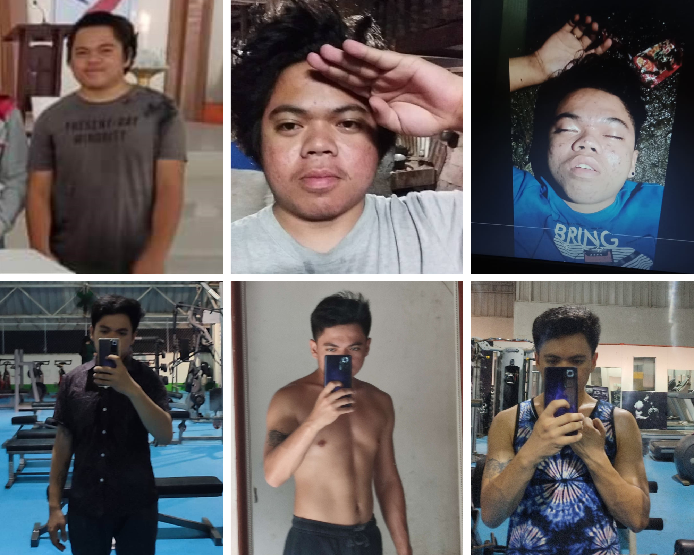

Ngano magsulat ta? Sa tibuok nakong kinabuhi nga pagka-studyante walay maistra o maistro ang nibutag sa pangutana nga ngano diay magsulat ta? Ingon nila magsulat ta kay kailangan ta magpasa og notebook, kay gradohan ang notebook og para naa tay reviewer sa exam. Exam nga makalimtan rapud nato. Magsulat ta'g essay, poem kay dako ni nga percentage sa grading system, mao ni ang written works. Maghimo ta og thesis, research kay apil ni sa learning material sa atoang subject.
Pero giignan ba ta nga ngano magsulat ta? Nagsulat lang ba ta para sa grado?
Imaginon nato kung unsa ka powerful ang pagsulat. Ang Bibliya gisulat thousands of years ago, gi-compose og mga pila ka libro nga gisulat sa pila ka tawo sa tulo ka continents nga gi-translate sa pila ka lengwahe nga hangtod karon buhi lang gihapon nga nagpausob og kinabuhi sa mga pila ka tawo.
Si Jose Protacio Rizal, atoang bayani, gisulat niya ang Noli Me Tangere at El Filibusterismo para e-expose ang pag-abuso og paggamit sa mga Spaniards sa atoa. Gigamit niya ang pagsulat as a weapon para mahikayat ang mga Pilipino nga mag-rebolusyon maong natukod ni Andres Bonifacio ang Katipunan para makamit nato ang kalayaan.
Imagina ilaang pag-antos nga gisugal nila ilaang mga kinabuhi para makamit lang nato ang kalayaan unya magtan-aw raka'g mga videos sa mga babayi tibuok adlaw nga ga igyad-igyad ang mga lubot? Mao ba ni ang kinabuhi nga gisugal sa atoang mga bayani? Wala ba ta naulaw?
Ngano magsulat ta? Tubagon nako ang pangutana pinaagi sa akoang experience sa pagsulat maong usbon nako. Ngano nagsulat ko? But first, how much experience do I have? Nagsulat ko since 2018.

Writer ba ko? Wala nako gi-consider akoang kaugalingon nga writer, maybe in the future magsulat ko'g libro.
Ngano nagsulat ko? Nagsulat ko kay ganahan nako e-express akoang kaugalingon, akoang mga ideas, mga opinions, mga pangutana nako sa kinabuhi nga dili nako matubag, “Unsay feeling nga kompleto og malipayon nga pamilya?”
Nagsulat ko kay naay mga problema nga dili nako masabtan, dili nako masulbad pero wala koy maisturyahan maong nagsulat ko kay nagkabug-at, nagkabug-at akoang dughan maong gipagawas nako sa pamaagi nga pagsulat.
Nagsulat ko kay ganahan nako balikan ang mga memorable og remarkable nga mga butang nga nahitabo sa akoang kinabuhi nga dili nako ganahan kalimtan. Dili ko ganahan nga matigulang nako nga maghulat nalang ko kung kanus-a ko mamatay maong ganahan nako balikan akoang mga kasakit, kaguol, kalagot og mga kalipay.
Nagsulat ko kay daghan kaayo ko'g ambition, pangandoy og mga plano sa kinabuhi nga ganahan nako makab-ot. Gisulat nako ang kinabuhi nga akoang ganahan, unsang klaseha nga pamilya akoang ganahan, unsa nga klase nga mga tawo nga akoang ganahan sa akoang kinabuhi. Gisulat sad nako ang kinabuhi nga dili nako ganahan para kabalo ko unsa ang angay likayan, para malikayan nako ang kinabuhi nga mesirable, malikayan nako ang kinabuhi nga naa sa impyerno.
Nagsulat ko kay I wanna be remembered. Ganahan nako ipasa akoang istorya sa kinabuhi sa akoang mga anak puhon, sa akoang mga apo, unsa akoang mga nakat-unan sa kinabuhi nga magamit nila sa ilaang pagdako.
Sa pila katuig nga nilabay, na-realize nako nga dili nako kailangan og ubang tawo para maminaw sa mga hinanakit nako sa kinabuhi kay naa koy papel og ballpen. Dili ko mabalaka og judgement, dili ko mabalaka nga e-take advantage akoang feelings, akoang emotions.
Sa kadugayan nako og sinulat, nakita nako ang kalayo sa kangitngit. Kay sauna, maabtan og pila ka simana ayha mo gaan akoang dughan. Maadlawan tulog ko, magabie naa rako'g kwarto, makadlawon mo gawas ko nga ako ra isa. Ang pila ka simana nahimo og simana, nahimo og pila nalang ka adlaw, nahimo og adlaw, nahimo og oras, minuto ayha mo gaan akoang dughan. Dayun karon, wala nako kahinumdom kung kanus-a ko last naguol kay mas nailhan na nako akoang kaugalingon, mas nasabtan nako akoang sitwasyon og gipatay na nako akoang daan nga kaugalingon.
Nasabtan nako sa libro nga Man's Search For Meaning nga dili gyud nato kontrolado unsay mahitabo nato sa atoang kinabuhi pero kita maoy permi kontrolado sa atoang emotion, unsa atoang bation og unsa atoang buhaton kung unsa man gani mahitabo nato.

Tan-awa ko karon, naa nay improvement. Gihinay-hinay na nako og tarong akoang kinabuhi, gihinay-hinay na nako og disiplina akoang kaugalingon. Mas na-confident ko maong naa koy nawong nga ipakita ninyo. Maulaw rako sa mga butang nga kabalo ko dili insakto.
Ikaw? Kanus-a man nimo sulaton imoang mga kaagi nga dili nimo ganahan kalimtan?
Kanus-a man nimo sulaton ang mga problema nga dili nimo masabtan og ganahan nimo masabtan?
Kanus-a man nimo sulaton imoang mga goals, imoang mga plano, imoang mga pangandoy sa kinabuhi nga ganahan nimo makab-ot?
Maong sulata imoang mga plano kay ang goal nga walay plano, pangandoy ra. Mo ana dayun ka nga "Naa man koy mga plano pero gibutang ra nako sa akoang utok." Ayaw. Sulata gyud kay wala ta kabalo unsay mahitabo sa atoang ugma maong naay higayon nga mausob atoang mga plano sa kinabuhi dayun makalimot na dayun ta nga naa diay tay mga plano, naa diay tay mga pangandoy. Malubong na dayun nato atoang kaugalingon sa kasakit og kaguol. Maong sulata kay kung magsulat bitaw ka mas mailhan nimo imoang kaugalingon, mas masabtan nimo imoang sitwasyon, makabalo ka unsay dapat buhaton og unsay dapat usbon.
Kay unsaon nato pagtikang paabante, pag-move forward kung mo likay ta sa atoang mga problema?
Unsaon nato pag-move forward kung gi-problema nato ang problema nga wala nato gipili?
Unsaon nato pag-move forward kung nabuhi ra gihapon ta sa atoang sauna?
Unsaon nato pag-move forward kung naa tay problema nga wala gani ga-exist? Gihimo ra nato pinaagi sa atoang hunahuna.
Kung magsugod ka og sulat, okay ra kung pamati nimo nga wala nagkadimao imoang gipangsulat, okay ra kung dili nimo masabtan imoang gipangsulat. Sulata imoang ganahan sulaton. Ipagawas imoang ganahan ipagawas pinaagi sa pagsulat. Tratoha ang papel nga imoang amigo nga andam maminaw nimo, nga dili ka e-judge, nga dili e-take advantage imoang feelings.
Maong pagsugod, pagsugod og sulat para mas mailhan nimo imoang kaugalingon, pagsugod og sulat sa istorya nimo sa kinabuhi nga dili nimo ganahan makalimtan, pagsugod og sulat sa mga problema nimo nga dili nimo masabtan og ganahan nimo masabtan, pagsugod og sulat sa kinabuhi nga imoang ganahan makab-ot.